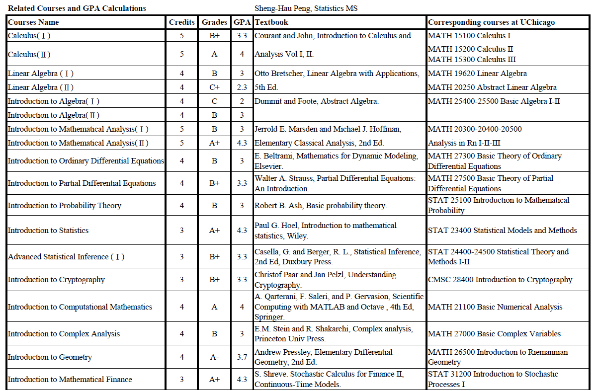
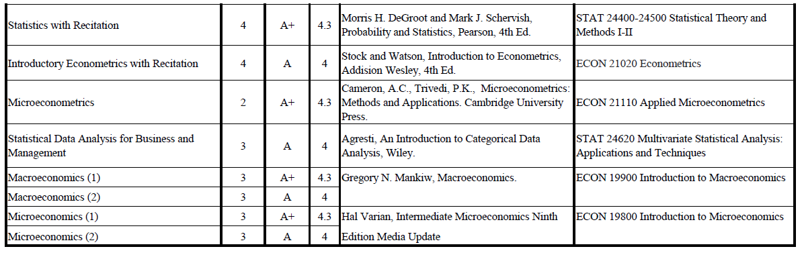
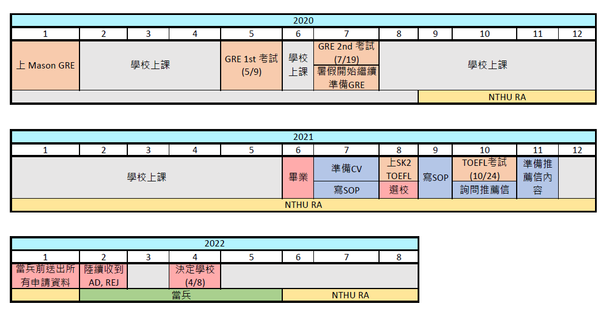

前言
下周就準備前往美國芝加哥，最後還是決定趁最後一周在台灣的時間稍微紀錄一下這一年申請的心得，不管是留做自己紀念，或者給未來的學弟妹參考，都是不錯的紀錄。以下就是我不負責申請美碩分享。
申請結果
首先，以下先分享我的申請結果
- University of Chicago, MS Stat (4/8決定)
- University of Chicago, MS Stat (2/12)
- University of California, Irvine, MS Stat (2/23)
- University of Michigan, MS AStat (3/2)
- University of Illinois-Urbana Champaign, MS Stat (3/3)
- University of California, San Diego, MS Stat (3/31)
- Boston University, MA Stat (4/21) (沒等結果)
- Texas A&M University, MS Stat (5/10) (沒等結果)
- Columbia University, MA Stat (2/9)
- University of Wisconsin, Madison, MS Stat (2/21)
- Yale University, MA Stat (2/24)
- Carnegie Mellon University, MSP (2/25)
- Stanford University, MS Stat (3/3)
- John Hopkins University, MSE in Stat (3/3)
- University of California, Berkeley, MA Stat (3/4)
- University of Washington, MS Stat (4/12) (沒等結果)
- University of California, Los Angeles, MS Stat (5/3) (沒等結果)
[Decision]
[Admissions]
[Rejections]
可以看出我的錄取率不高，有些選校都有點自不量力，但我當初的想法就是要去就要去自己真正想去的，不需要為去美國而去。另外，我申請的學校主要分成兩種類型，一種是需要做研究、寫論文的，另一種則是工作取向，會這樣選擇主要是我不想過度侷限自己的選擇，不一定是為了留美工作，才選擇美碩，而是在近幾年學了一些理論、做了一些東西，想要真正為了解決問題而去了解學問。
最後選擇 UChicago 的理由，除了芝大的學術盛名外，也是想真正體會美式大學的風格是如何，雖然很多都說芝大的課業壓力很重，但是我還是親自體驗看看。
申請背景
Education:
國立台灣大學數學系，輔系經濟系 （2017/9～2021/6）
GPA: 3.65/4.3
Summer Session, University of California, Berkeley (2019)
GPA: 3.65/4.0
Test Scores:
GRE: 323 / V: 153 / Q: 170 / A: 3.5
TOEFL: 97 / R: 26 / L: 26 / S: 21 / W: 24
Work Experience:
Research Assistant @ Dept. of Quant Finance, NTHU (2020/9—2022/8)
Teaching Assistant @ NTU (2020/9—2021/6)
工作經驗是我個人認為我最大弱項，大學期間雖然有找實習，想要多試試如何應用所學，但是從大三開始兩次暑假都沒找到，不過雖然沒有機會，但是也練習了很多次面試…。
Related Courses and GPA:
因為學校申請需求我自己有列了一張表，主要是為了過濾一些非相關科系，確認你是否做好準備。
 選校理由
一開始因為我的研究領域，我選擇申請的領域包括Statistics, Fin-Math, Fin-Eng，後來只申請Statistics的原因主要是我認為我的背景更 fit in 統計的要求，我自認申請的難度比較低(很多Fin-Math, FE 的競爭超級激烈，我GPA 不算太高，工作經驗基本等於0，所以這麼認為)，而且很多學校的 Statistics Programs 也都有很多不同的 tracks，包括Data Science, Biostatistics, Finance，我不想立刻就把自己的path 縮窄成只做 Financial Mathematics，因此選擇申請 Statistics。
申請時間軸
考試準備
GRE
詳情可以參閱 【GRE】二戰323 AW3.5 (Aug 15, 2020)，那篇有詳細解析我是怎麼準備GRE考試的。
TOEFL
我最後的成績是 97 ，也沒破百，所以準備方法大家就參考就好。我準備 TOEFL 是在SK2 補習，時間是2021/8，因為疫情關係，所以所有課程都採線上化，我認為補習給了自己一個激勵，而不會拖，給你作業和討論，就是希望可以多練習，我認為幫助蠻多的。
我 TOEFL 總共考了兩次，兩次都採用 Home Edition，因為疫情關係，大多學校都採用 Home Edition 的成績，如果可以我覺得 Home Edition 很不錯，因為可以在自己熟悉的環境考試，不論聽力、口說都不會受干擾，不過自己的設備要先檢查過有沒有符合 ETS 規定，否則考試當下發現有不合格的地方，不僅不能考試，還會影響心情。
總而言之，這兩個考試基本是申請學校一定要考的，如果已經有想要申請美國學校，能提早就提早準備，GRE 成績能留五年，TOEFL 能保留兩年，早點準備不虧。
申請文件
SOP 撰寫
SOP (Statement of Purpose) 也是令人頭痛的部分，我的作法是先寫一版詳細記錄自己做過的一切的版本(盡量多)，再針對不同學校的風格、要求做客製化調整縮減，最後才讓專業外籍人士潤稿。愈多人看過你的SOP，愈能找出SOP的盲點，所以愈多人看過愈好。
一定要看學校的字數規定和重點，有些甚至有給問題要回答，不能答非所問，所以必須詳細了解每個program 的取向，可以參考program admission website。有些會有一個part 是 Personal Statement，如果是兩篇都有，PS主要是你個人的經歷，SOP主要是你的申請動機，若只有一篇，那兩個部分是合併一起看的，經歷、動機都要寫。
以下是主要初版分段架構，每個學校都有不同刪減，有些段落是我把它放在PS，有些是SOP：
(PS)首段：Personal Background: The Great Leap Forward in Math
主要講述自己的生長背景，如何獲得數學上的興趣。
(SOP)第二段：Determined and Excited to Scale the Next Level: College Math
講述自己大學前的階段如何學習、研究，列出一些自己以前的事蹟，跨入高等教育前的準備。
(SOP)第三段：University: Began with “Theory” and Finding Success in "Application"
這段主要講述自己大學期間做了甚麼 Projects，有什麼磨練、反思和成就感，不同的思考方式，帶給我甚麼結果，如何從數學系理論的訓練，做出什麼不同的應用，盡量帶出自己如何找到研究方向，還有自己和學校program 的關係。
(SOP)第四段：Working Experience
具體提出我當研究助理做了甚麼，有什麼機緣加入教授的team。
(SOP/PS)第五段：Preparation for Living Abroad: Summer Session at the University of California, Berkeley
講述2019年的短暫留學經驗如何帶給我啟發，讓我很積極地想到美國留學。
(PS)第六段：Potential Contribution and Cultural Diversity
這段主要是有些學校要求描述自己的 diversity statements，不是每個學校都有要求，我講了自己身為亞洲人面對的刻板印象。
(SOP)末段：Plans for the Future and My Academic Interests
我認為最重要的一段，必須強烈扣題，自己如何連結這個program，例如：課程安排或教授研究領域等等，描述未來自己想要做什麼，以及這個program 如何幫助你完成你的目標，最後努力表達自己有多想加入這個program。
CV 撰寫
CV 架構很多地方都有分享，主要就依自己的學歷、經歷、專長，把想要的秀出來給申請官看，濃縮成一頁，我的 CV 主要分成三個 parts，Education, Experiences, Projects，再加上聯繫方式。
- Education 部分簡單處理，放上學歷成績就可以。
- Experiences 在描述自己的貢獻的地方可以用數字量化，讓大家清楚你到底做了甚麼、做了多少。
- Projects 區塊中，我會加入連結，連結到自己 project 的 result，讓大家更一目了然。
結語 & 心得
綜觀我的申請過程，我認為可改進的部分是選校策略，我申請了一些比較看重工作經歷、就業導向的program，例如：CMU, Columbia，因為我本身focus的領域終究是比較偏向理論派，著重理論的program對我而言，錄取機率高一些，有點浪費自己預計的申請名額。申請結果不算很好，但是我已經很滿意了。
從19年去 Berkeley 感受到國外學習的氛圍，有了想出國體驗人生的心情，20年寒假開始準備GRE 還考了兩次，21年暑假準備TOEFL，把一切所需都準備齊全。畢業後去清大當研究助理，期間還去了一家新創公司幫忙，一直到今年二月收到兵單，做了最後的選擇，這一切經歷了很多。
從以前到現在做了很多選擇，後悔的想法也是常常有，但久了也漸漸適應以前做的每個決定，喜歡上做完每個決定的生活，享受每個犧牲帶來的紅利。接下來我想才是真正的挑戰，包括自己的心態調整。從頭一路做了那麼多準備，到現在很多年之前的想法終於實現，祝自己之後一切順利，其他出國奮鬥的朋友也一起加油吧！
希望此文可以幫助到正在申請或未來準備申請的人。儘管GRE跟TOEFL也沒有衝到很高，但很慶幸的還是能夠收到UChicago的錄取信。希望我的背景能給一些需要的人幫助。